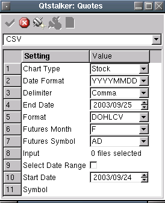
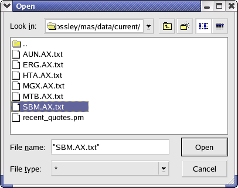

CSV Plugin
Description:
Use local plain-text comma-separated values (CSV) ascii files.
Perhaps
you already have a collection of files in this format ... end-of-day
data
managed as a separate concern by some other application. This plugin is
further flexible in that it uses user created "rules" to import many
different formats. The rule describes the field format of each line of
data to import.
General Input Parameters:
- Input - The ASCII file to be imported from your local filesystem.
- Symbol - If you do not specify a symbol field in the rule, the
symbol field will enable allowing you to enter a symbol. If no symbol
is entered, then the basename part
of the filename will be used.
- Rule - The field format rule to apply to the input file selected.
- Select Date Range - Select a date range of records to import. If
checked, the Start Date and End Date options are required.
- Date Start - Specify a start date for record filtering. Only used
if "Select Date Range' option is checked.
- Date End - Specify a ending date for record filtering. Only used
if "Select Date Range' option is checked.

Rule Page Parameters:
Use this page to create, edit or delete rules.
- Rule - The name of the rule.
- Chart Type - The chart to create can be stock or futures chart.
- Delimiter - The delimiter used between fields.
- Fields - The field type you want to insert. Currently the
following fields are available:
- Date:YYYYMMDD - date field
- Date:MMDDYYYY - date field
- Date:DDMMYYYY - date field
- Date:MMDDYYYYHHMMSS - ISO date field
- Time - time field eg. 23:59:59
- Symbol - symbol or ticker name
- Ignore - use this to ignore any unwanted data fields in the
record
- Rule Contents - The contents of the rule.

Use the buttons on the button bar to create and modify the rule. You
create a new rule and insert the field format of the ascii file into
the Rule Contents list. The fields in the list should match the fields
in the ascii file from top to bottom in the list. Using the above
picture as an example; The rule would import a record that had the
format of "Date:MMDDYYYYHHMMSS,Open,High,Low,Close,Volume". An actual
data record would look something like "12/31/1999
23:59:59,100,101,99,100,999999".